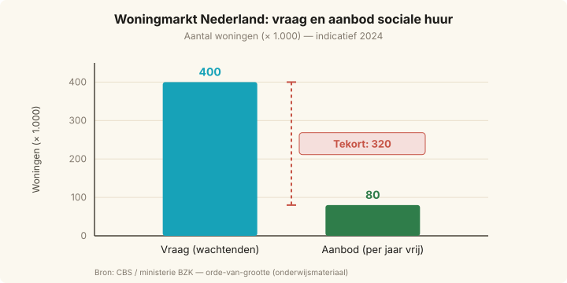

Schaarste en economisch denken — Nieuws met visual
Honderdduizenden Nederlanders wachten jaren op een sociale huurwoning
Honderdduizenden Nederlanders wachten jaren op een sociale huurwoning
Marktanalyse
In heel Nederland staan zo’n 400.000 mensen op de wachtlijst voor een sociale huurwoning, terwijl er jaarlijks maar rond de 80.000 van zulke woningen vrijkomen of nieuw worden opgeleverd. In de Randstad lopen de wachttijden op tot tien jaar of meer. De vraag naar betaalbare woningen is dus veel groter dan het aanbod — een schoolvoorbeeld van schaarste.
Omdat niet iedereen tegelijk een woning kan krijgen, moeten er keuzes worden gemaakt. Gemeenten geven voorrang aan bepaalde groepen (statushouders, mantelzorgers, mensen met medische urgentie) en de overheid moet kiezen waar zij haar geld aan besteedt: meer nieuwbouw, hogere huurtoeslag, of andere maatschappelijke uitgaven zoals onderwijs. Elke euro die naar wonen gaat, kan niet meer naar iets anders — dat zijn de alternatieve kosten van het beleid.
Ook individuele woningzoekenden maken voortdurend keuzes: blijven wachten op een goedkope huurwoning, duurder particulier huren, of langer bij ouders blijven wonen. Elke optie heeft zijn eigen opbrengst en zijn eigen alternatieve kosten.
Vragen
Marktanalyse- a) Lees de eerste alinea en bekijk de visual. Wat is in dit nieuwsbericht het schaarse middel, en welke twee groepen hebben er behoefte aan?
- b) Gebruik de cijfers uit de visual (×1.000). Hoeveel mensen staan er meer op de wachtlijst dan er jaarlijks woningen vrijkomen? Hoeveel jaar wachten zou dit gemiddeld opleveren als alle wachtenden in de rij blijven en er niemand bijkomt?
- c) De overheid moet kiezen waaraan zij haar budget besteedt. Noem twee concrete alternatieven waartussen de overheid kan kiezen binnen het woonbeleid, en geef per alternatief aan wat de alternatieve kosten zijn.
- d) Een individuele woningzoekende besluit te blijven wachten op een sociale huurwoning in plaats van duurder particulier te gaan huren. Leg uit wat voor deze woningzoekende de alternatieve kosten van het blijven wachten zijn.
- e) Stel: jij bent wethouder Wonen in een grote stad. Welke van de alternatieven uit vraag c zou jij kiezen, en waarom? Onderbouw je keuze met de begrippen “schaarste” en “alternatieve kosten”.
Antwoordmodel tonen
- a) Het schaarse middel is de (betaalbare) sociale huurwoning. De twee groepen met behoefte zijn: (1) woningzoekenden die op de wachtlijst staan — ongeveer 400.000 mensen — en (2) nieuwe instromers die er elk jaar bij komen (jongeren die zelfstandig willen gaan wonen, gescheiden mensen, statushouders, enzovoort). Samengevat: er zijn veel meer mensen die een sociale huurwoning willen dan er woningen beschikbaar zijn — dat is schaarste.
- b) Verschil = 400.000 − 80.000 = 320.000 mensen extra vraag per jaar. Als we alle 400.000 wachtenden moeten bedienen met slechts 80.000 woningen per jaar (en er komt niemand bij), duurt dat 400.000 ÷ 80.000 = 5 jaar. In werkelijkheid stromen er elk jaar nieuwe wachtenden in, dus kan de wachttijd in dichtbevolkte regio’s oplopen tot 10 jaar of meer.
- c) Twee alternatieven (voorbeelden): (1) Extra geld in nieuwbouw van sociale huurwoningen — alternatieve kosten: dat geld kan niet meer naar bijvoorbeeld het onderwijs of de zorg, of naar hogere huurtoeslag voor huurders die nu al een woning hebben. (2) Extra geld in huurtoeslag verhogen — alternatieve kosten: er komt geen extra woning bij (het aanbod blijft gelijk), dus het geld had ook aan nieuwbouw besteed kunnen worden om de schaarste zelf te verkleinen. Andere correcte paren (bv. nieuwbouw vs. sociale huur optrekken, bouw in buitengebied vs. in binnenstad) zijn ook goed, mits het niet-gekozen alternatief expliciet als alternatieve kost wordt benoemd.
- d) De alternatieve kosten van blijven wachten zijn de opbrengst van het beste niet-gekozen alternatief — in dit geval: het comfort en de zelfstandigheid van particulier huren (of thuis blijven wonen). Concreet: de jaren woonplezier, zelfstandigheid en locatievoordelen die de woningzoekende nu opgeeft door te blijven wachten. Let op: de alternatieve kosten zijn niet de prijs van de sociale woning en ook niet het verschil in huur — het is de waarde van het beste alternatief dat je laat schieten.
- e) Voorbeeldantwoord (open): “Ik kies voor extra nieuwbouw van sociale huurwoningen. De kern van het probleem is schaarste: er zijn veel meer woningzoekenden dan woningen. Huurtoeslag verhogen maakt bestaande woningen voor meer mensen betaalbaar, maar voegt geen enkele woning toe — de schaarste blijft dus even groot. De alternatieve kosten van nieuwbouw zijn hoog (geld dat niet naar onderwijs of zorg kan), maar alleen door het aanbod te vergroten wordt het fundamentele schaarsteprobleem kleiner.” Een andere onderbouwde keuze (bv. huurtoeslag of voorrangsregels) is ook goed, zolang “schaarste” en “alternatieve kosten” expliciet gebruikt worden.